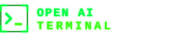

Dienst
OPENCLOUD
Dateien, Sync, Freigaben. Apache-2.0. Port 9200.

Lebendes Styleguide. Alles hier kommt aus design/tokens.json →
build.sh → dist/oat-cloud.css. Aendere die Tokens,
baue neu, und Terminal, Zellij-Theme und alle Web-UIs ziehen mit.
Kontrast: #00FF41 auf #000000 = 15.3:1 (AAA).
#008F11 auf #000000 = 4.6:1 — nur fuer Rahmen,
Labels und Sekundaertext ab 16px, nie fuer Fliesstext.
Eine Familie, monospaced, ueberall. Groesse traegt die Hierarchie, nicht die Schriftart.
Fliesstext in --oat-fg-neutral, weil reines Neon-Gruen ueber mehrere Zeilen ermuedet. Maximal 72ch breit.
Metazeile · 2026-08-02 14:20:31 · exit 0 · 1.4s
$ odysseus gitviz activity
DEVKITZ/odysseus ▁▂▅█▇▃▂▁▄▆█▅▂▁ 47 Commits / 14 TageDie Grundkachel — dieselbe Anmutung wie ein Zellij-Pane: Rahmen, Eck-Klammern, Reiter links, Tag rechts.
Inhalt eines Panes. Panes verschachteln sich nicht — sie liegen im Raster nebeneinander.
Dateien, Sync, Freigaben. Apache-2.0. Port 9200.
Code, Issues, A2A-Webhooks. MIT. Port 3300.
Chat mit Werkzeugen. MIT. Port 3080.
| Dienst | Port | Lizenz | Uptime | Status |
|---|---|---|---|---|
| gitea | 3300 | MIT | 99.9 % | online |
| opencloud | 9200 | Apache-2.0 | 99.4 % | online |
| immich | 2283 | AGPL-3.0 | 97.1 % | degraded |
| voicebox | 10200 | MIT | — | offline |